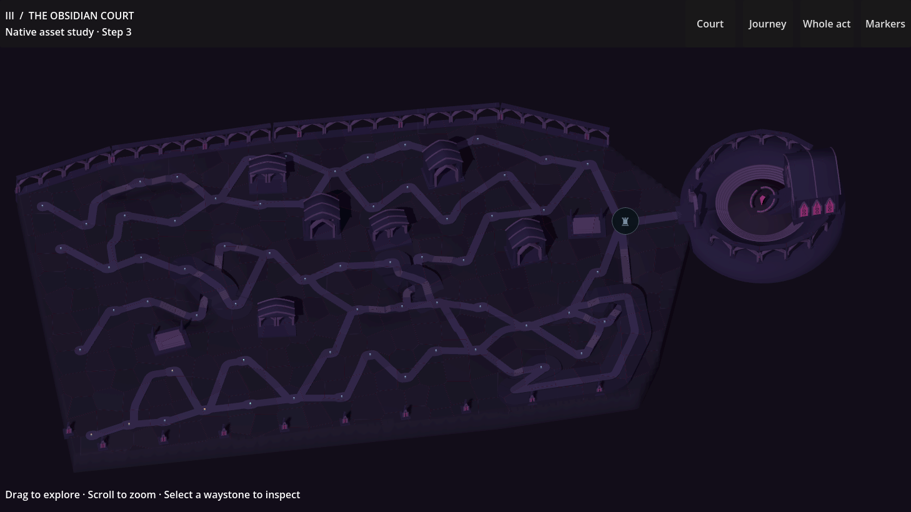
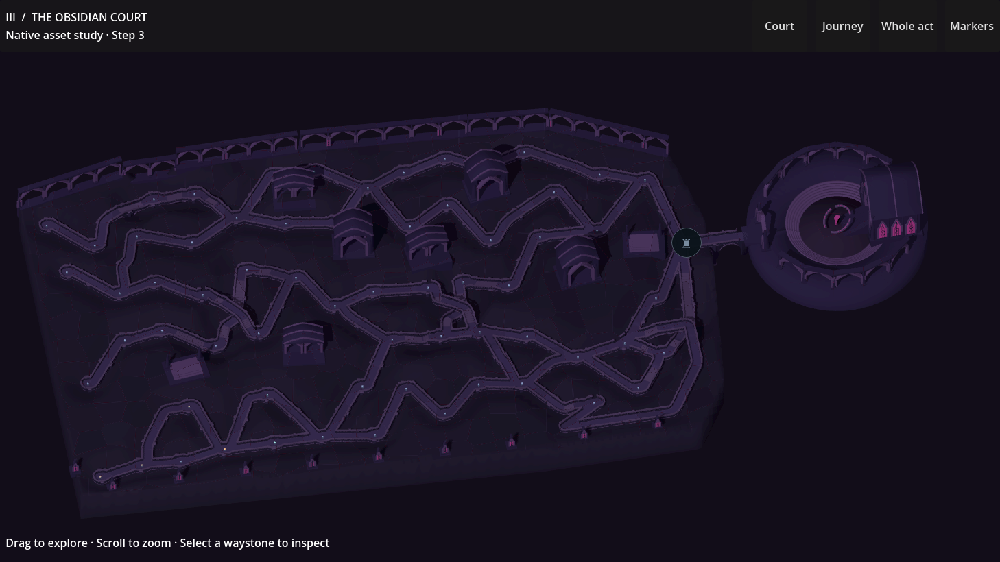

Solid stone paths belong to the precinct. Broad terraces carry the upper walks; short recessed passages keep the three crossing routes separate. The sovereign court now meets the same continuous ground.

Ordinary paths have solid foundations and fitted stairs. Removing repeated parapets and arches gives the surrounding architecture room to define the place.
At the three crossings, the lower approach descends beneath a broad terrace. The stair entrance stays open to the sky until there is enough headroom for the covered passage.

Capture provenance · Geometry checks · Passage and contact checks · Phone controls · Tablet controls
Earlier full asset study, v14 — includes the original court views and halo film; those images predate this road revision.